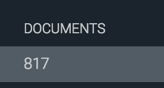

Aaron Herman
SECURITY REPORT: MAPCHAT
Introduction
This report is drawn from security tests run against Kenny Ling's implementation of a mapchat server that stores users' locations with a message.
Methodology
I used only black box testing by means of curl and HTML to carry out my attacks. Nothing on the server side suggested that any attacks I had not previously tried were possible.
Abstract
The vulnerability of this app stems from the fact that, with only a few exceptions, it allows users from anywhere to submit anything as a query.
Issues Found
Script injection
- LOCATION: /sendLocation
- SEVERITY: High. Can break the site.
- DESCRIPTION: If the message field includes a <script> tag, the tag can be used to store JavaScript in the database that will then be injected into the HTML and sent back to every client. The screenshot shown is an example of some JavaScript containing an infinite loop that prevents the site from loading.
- SOLUTIONS:
Extra fields
- LOCATION: /sendLocation
- SEVERITY: Low. Uses a slight amount of extra space in the database but does not affect the server or client(s).
- DESCRIPTION: If a person adds extra fields to the request body, the data they send is still stored, including the extra fields. This wastes space on the database.
- SOLUTIONS: Check the request body to make sure that there are only the prescribed fields, e.g. by searching for the = character and checking the text before it to make sure it's a valid field.
CORS + automated requests

- LOCATION: /sendLocation
- SEVERITY: High. Even when requests are sanitized, this can result in breaking the page.
- DESCRIPTION: Because the app allows CORS for all domains (*), I was able to create an html page with some JavaScript in it that sent nonstop valid requests to the server. This resulted in the use of a ridiculous amount of space in the database (817 documents after 30-60 seconds of running the script), and a ridiculous amount of garbage sent to clients.
- SOLUTIONS: Only allow CORS for known or trusted domains.
Conclusion
You never, EVER trust user input.